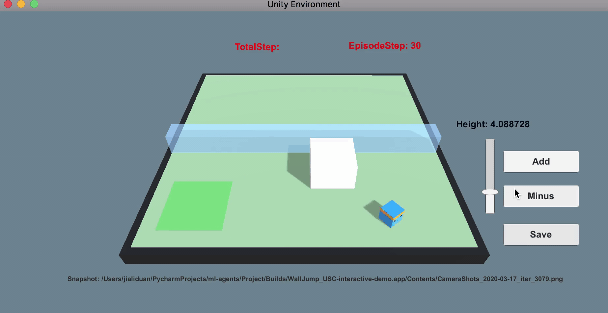
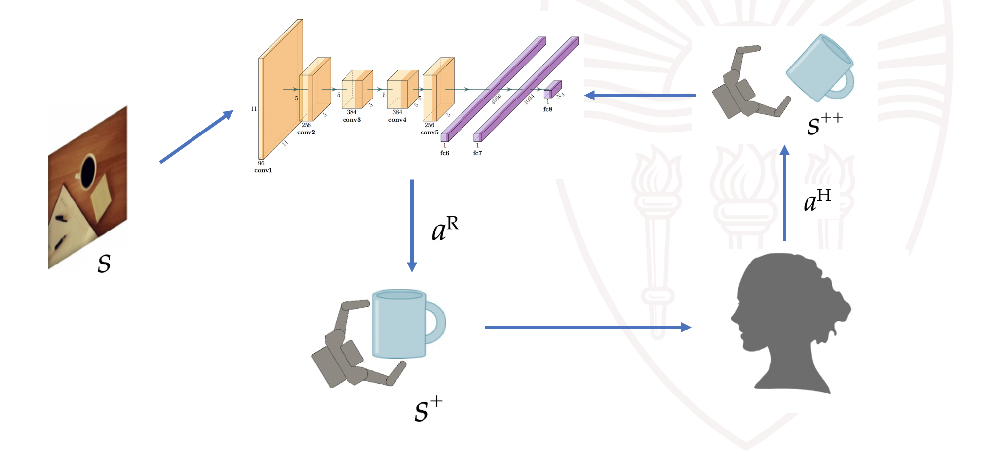
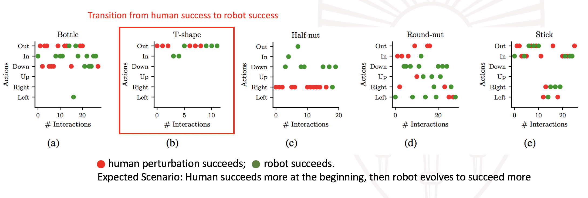

Robotic learning with adversarial human, where robotic policy is the analogy of generator and human perturbations as the discriminator.

Human prior as curriculum for RL agent training.
I was involved in a series of interesting robotic projects with Prof. Stefanos Nikolaidis during my PhD. In this page, I will show two of them which concern training agents in simulation. The first project aims to learn robust robotic manipulation in the mujoco environment. The key idea is to incorporate the generator-discriminator concept from generative adverarial network (GAN) into robotics training. In this analogy, the robot policy which predicts the "action" is the generator, whereas human who performs perturbations to judge the quality of the robot action can be seen as the discriminator. In 2019, this idea of leveraging "adversarial" human is quite new in the domain of human-robot interaction (HRI), and we're the first to prove empirically that this setting actually helps improve the robustness of robotic grasping, in contrast to many pre-existing human-assisted frameworks. Because of this, I'm fortunate to have received the Best Paper Finalist in IROS that year.
The second project can be seen as an extension of the first one, which also leverages human feedback as an objective to train the robot policy. The difference is that this project leverages human feedback as curriculum in the setting of reinforcement learning. Imagine a RL agent solving a new task of navigation. In the beginning, the agent is barely moveable, unable to understand the goal or make any progress (this is particularly severe when the reward is sparse)! However, human has prior knowledge over the difficulty of the task, and can thus make changes to facilitate the learning (by simplifying the environment or moving the agent closer to the goal for example). Compared to prior works such as GoalGAN that trains two agents to achieve similar effects, our argument is that humans can be more efficient in getting the agent policy converged. Aside from this intuition, another main contribution of this project is to enable human-in-the-loop reinforcement learning, which requires quite a bit engineering. I ended-up building on UnityML in the end, as the framework is more flexible than mujoco with its "client-server" infrastructure and its C# interface that makes human interactions much easier!
The optimization objective is to obtain the optimial robot policy which, given state as input (in this project image), predicts a grasping action that maximizes the reward. The reward is a heuristic that combines the observation reward (i.e., whether grasping succeeds) and the human reward (i.e., whether the grasping is robust). The robustness of the grasping is evaluated based on if the grasping can withstand human perturbations.
The above fomulation can be more vividly illustrated in the below diagram. Given a visual image as input, the robot policy network predicts a robot action $a^R$. The robot executes the action, landing in a subsequent state $s^+$. The human observes the new state and thinks about an adversarial action $a^H$ that will minimize the robot's reward. In other word, the human checks the robustness of the robotic action by performing a perturbation to maximize the human's adversarial reward. Finally, the resulting state $s^{++}$ is landed.
The robot policy is implemented as a neural network that takes an RGB image as state. This is much challenging than cases where low-dimensional states were used as in prior mujoco settings. Therefore, a pre-training step is needed to initialize the robotic policy [Supersizing self-supervision: Learning to grasp from 50k tries and 700 robot hours]. Another thing worth noting here is that the human policy is not updated (we train voluntary users before the experiments), so we didn't observe the instability of generator training as reported in GAN papers.
Why you may wonder, that a human adversary is needed? In fact, we ask ourselves the same question when we set out to design the architecture. It's possible to train a simulated agent whose goal is to minimize the robot agent's reward. In this setting, the framework reduces to a more typical generator-discriminator zero-sum game. Our main argument is that human has prior knowledge over the robustness of agent manipulations, as different objects usually require different ways to manipulate (See the below figure as an example). We also argue that human is better than a simulated agent in understanding how to perform the pertubations.
Robustness is a pretty subjective measure, so we defined two hypothesis that we want to validate in this project.
We then compared the success rates and robustness rates based on different training strategies, different users and different objects, with or or without perturbations. As robutsness is rather a subjective metric, we also conducted a qualitative study where each participant's responses is analyzed. We observed that the robot's success rates improved after training, and leading to better robustness.
The below plot shows two types of information. Red dots indicate successful human perturbations. Green dots show successful robot manipulations. For different objects (i.e., bottle, Stick) there exists differnt robust grasping strategies, and different pertubation strategies. For example, we allow users to apply 6 different directional forces (e..g, Out, In, Down, Up, Right, Left) to maximize robot failures. We observe that over the course of training, robots gradually learn to counter the disturbances from human and the success rate improves.
Adversarial Action Over Time: We observed that human tends to stick to a certain perturbation over the course and that human adversary tends to succeed at the beginning.
Robot Success Rate Over Time: During training, robot success rate improves and gradully withstands human perturbations.
Human Adversary vs Simulated Adversary:In our paper, we also compared how human adversary differs from simulated adversary and how robot evolves under two settings. The conclusion is that robot policy tends to converge faster with human adversary.
As mentioned in the first paragraph, there's a connection between human-adversary as discriminator and human feedback as curriculum. In fact, the formulation defined earlier can also be extended in the RL setting.
The main difference here is that states and actions are now functions of time and that the objective is also to maximize the accumulated reward over time. In other words, the preivous project is a one-step RL as the whole action is calculated with inverse-kinematics, whereas here a trajectory is a series of actions.

In this two projects, the potential of leveraging human interactions for robotic learning in simulation is demonstrated. More engineering details regarding the two projects will be updated next time.